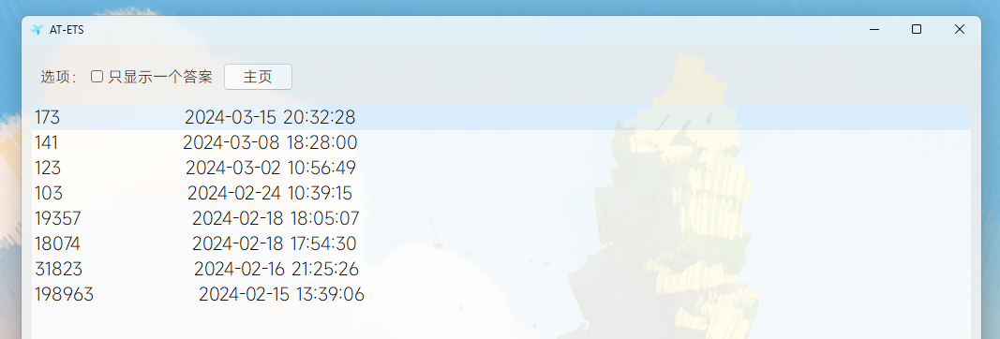
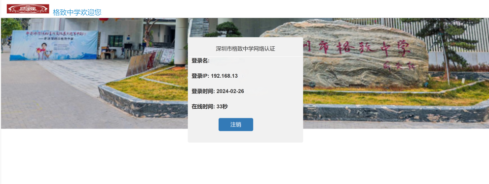

E听说答案工具

重要通知：Android 14对于data目录的授权进一步收紧 在Android 14的后期版本和Android 15预览版中 当前传入授权已失效 Shizuku授权方案不如直接用电脑 所以想继续正常使用请保持版本低于Android 14
下载题目后即可获取答案 不用再为同学不给答案而担心了 你也可以用它获取到比E听说本身提供的更多的答案 遥遥领先🤗
Andoid系统下载APK文件安装 Windows下载Zip文件解压运行 欢迎改进Andoid版本 由于个人原因 此项目不再更新 如果有什么问题的话 欢迎联系我~
最新应用下载请点我：
Windows端开放源代码
Android端开放源代码
2024.3.22
本期E听说答案
自动认证学校网络

大家都知道啊 我们连接学校网络的时候往往会弹出一个窗口提示你去认证 但很显然 我们都没有这个认证的账号和密码 不过 怎么可能用不了呢😆
以下是我无聊时做的一个小工具 用于自动认证 Android设备使用时任何弹出的授权请求务必授权 否则会导致出错!
包括iOS在内的所有系统都可直接在本页面下方使用“直接认证” 此功能不稳定 请勿依赖浏览器端的直接认证
3.27更新内容：删除了经常抽风的自动联网 修改了判定逻辑 新增登出认证以及显示在线时间 自动保持在线的功能
最新应用下载请点我：
2024.3.27
关于我
好吧，其实这里没什么好看的~
不定期更新点无聊的内容和E听说答案🥰
2024.3.17
联系我
发送至邮箱：yc@zh206yc.onmicrosoft.com
或者...微信~：x2463274
往期所有内容